Erizo
Ateşten, tarladan ve denizden. Kimera'nın çatısında, Çıralı'nın dağlarına bakan bir akşam mutfağı.From fire, field and sea. An evening kitchen on Kimera's rooftop, facing the mountains of Çıralı.
Bu akşam için masaA table for tonightHiçbir şey fazla yüksek sesle değil. Hiçbir şey fazla cilalı değil.Nothing too loud. Nothing too polished.
Domates, ot, duman, zeytinyağı, günün avı ve yavaş pişirmenin rahatlığı. Erizo'da her tabak tanıdık bir şeyle başlar ve biraz beklenmedik bir yerde biter.Tomatoes, herbs, smoke, olive oil, the catch of the day and the comfort of slow cooking. At Erizo every plate begins with something familiar and ends somewhere slightly unexpected.
Erizo İspanyolcada kirpi demek. Mutfağı Şef Yüksel Demirkıran yönetiyor; sebze ve otlar on dakika ötedeki Huysuz Çoban çiftliğinden sabah toplanıp akşam tabağa geliyor.Erizo is Spanish for hedgehog. The kitchen is led by chef Yüksel Demirkıran; vegetables and herbs are picked in the morning at Huysuz Çoban, the farm ten minutes away, and reach the plate by evening.
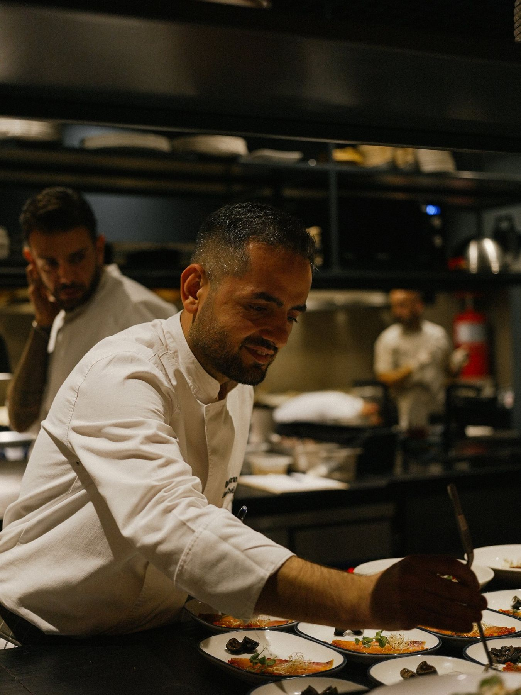
"İlk misafir gelmeden çok önce mutfak çalışmaya başlamıştır.""Long before the first guest arrives, the room is already working."
Bıçaklar bilenir, istasyonlar kurulur, ateş ısısına getirilir. Siz oturduğunuzda günün büyük kısmı zaten tabağınızdadır. Kestirme yok; sadece tekrarla, hafızayla ve dikkatle şekillenen bir ritim.Knives sharpened, stations set, the fire brought up to temperature. By the time you sit down, most of the day is already on your plate. No shortcuts; just a rhythm shaped by repetition, memory and attention.
Şef Yüksel Demirkıran · @yukseldemirkran
Ateşte biten tabaklar.Plates finished over fire.
Menü mevsimle değişir. Aşağıdakiler Erizo'nun mutfağından, Instagram'da paylaştığımız tabaklar.The menu changes with the season. These are plates from Erizo's kitchen, as we've shared them on Instagram.
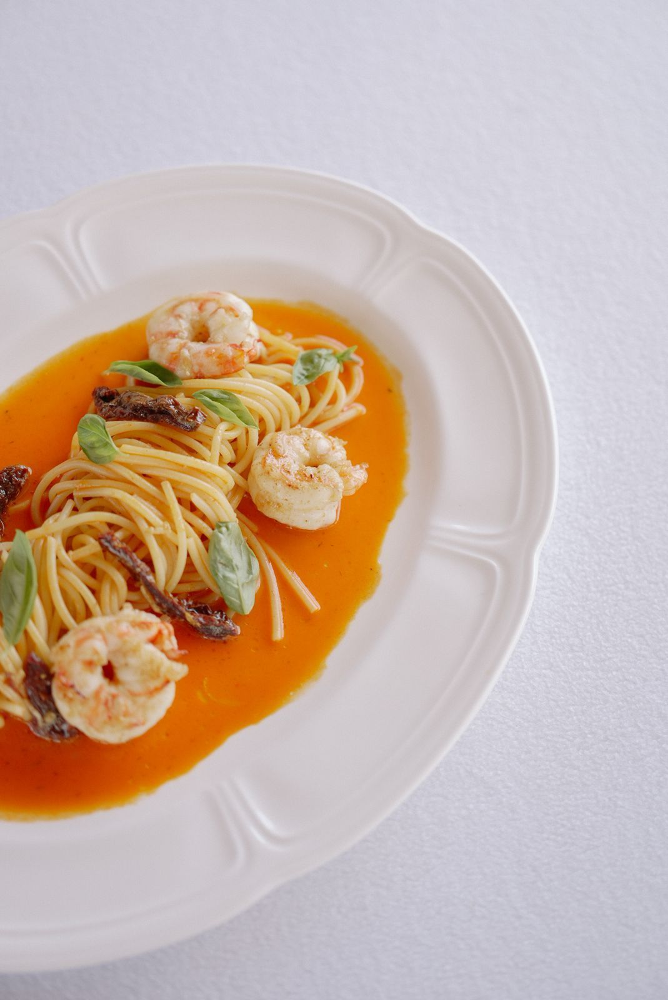
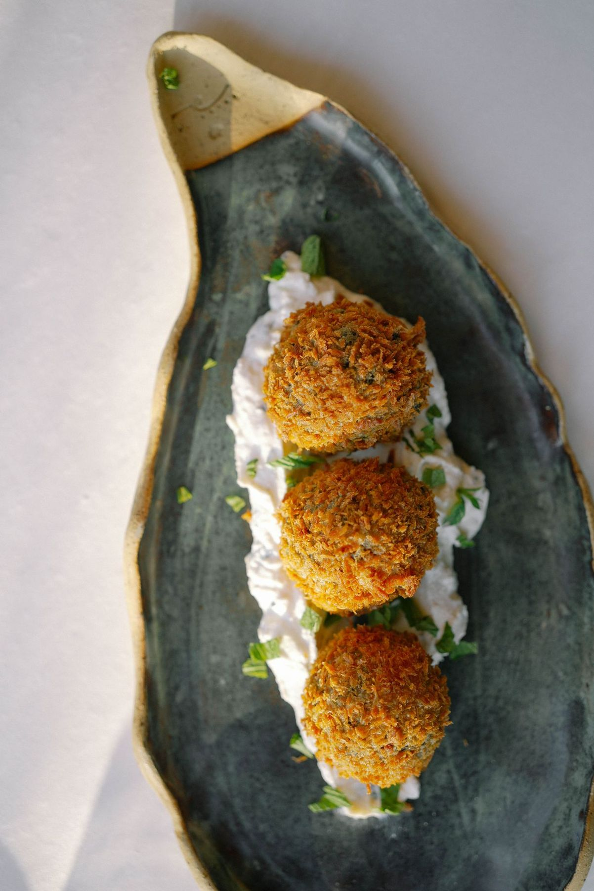
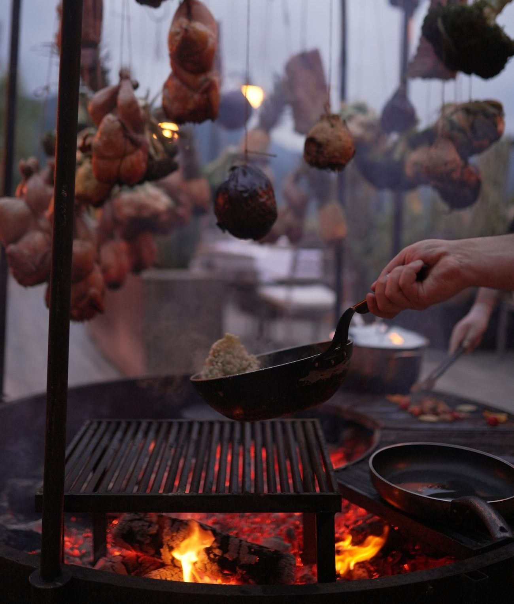
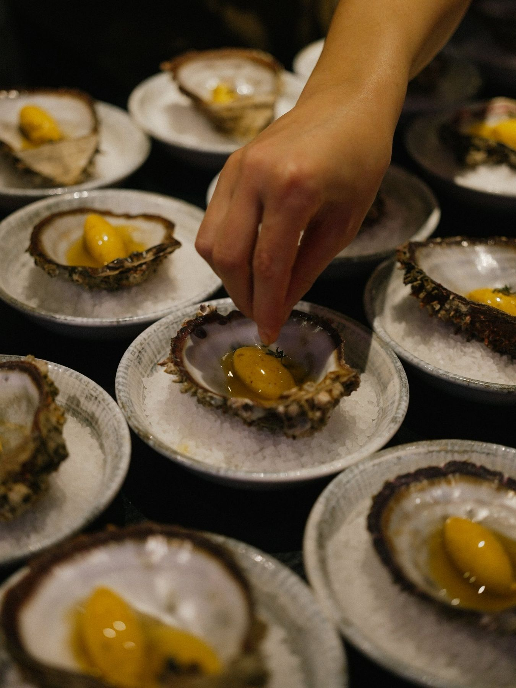
Sabah toplanır, akşam tabakta.Picked in the morning, on the plate by evening.
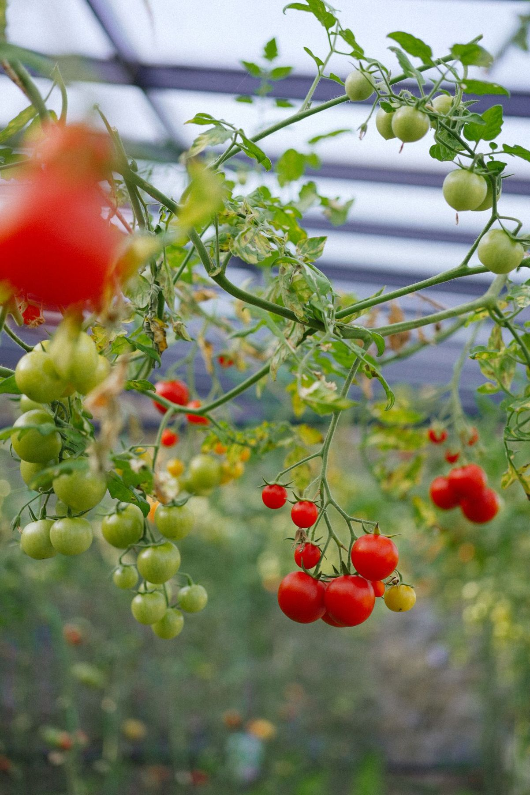
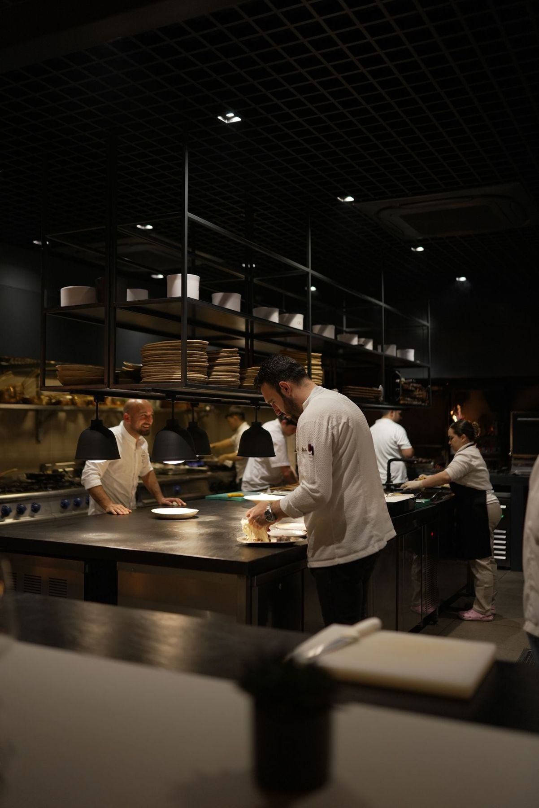
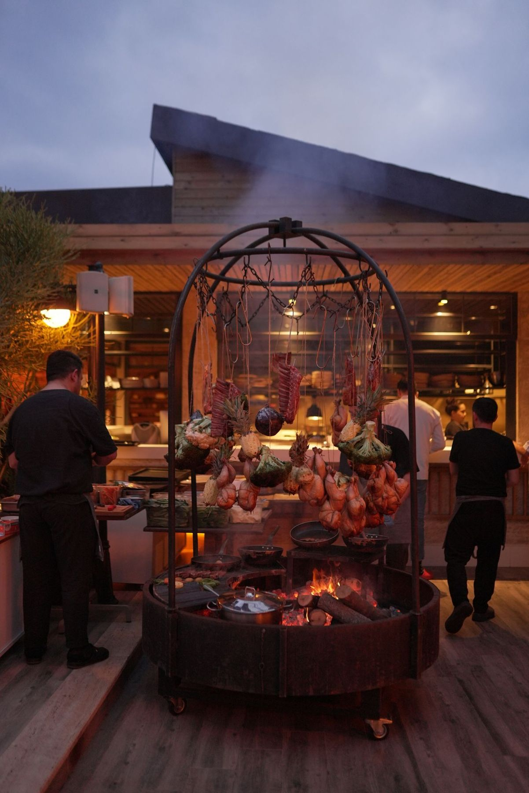
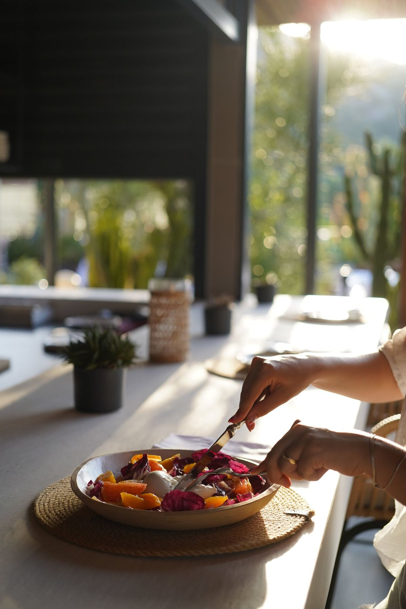
Yemek bitince akşamın bitmesi gerekmiyor.When dinner is over, the evening doesn't have to be.
Dağlar yerinde durur, mutfak usulca çalışır, bar gecenin ritmini toplar. Eylülde Erizo, Slow Food'un çalışmalarını destekleyen dünya çapındaki Negroni Week'e katıldı; ekimde barı misafir barmenlere açıyoruz.The mountains stand still, the kitchen moves softly, the bar gathers the rhythm of the night. In September Erizo joined Negroni Week, the worldwide week supporting Slow Food's work; in October we hand the bar to guest bartenders.
- Akşam yemeğiDinner18.30–23.30
- Bar01.00'e kadarUntil 1 am
- YerWhereKimera Hotel çatı katı, ÇıralıKimera Hotel rooftop, Çıralı
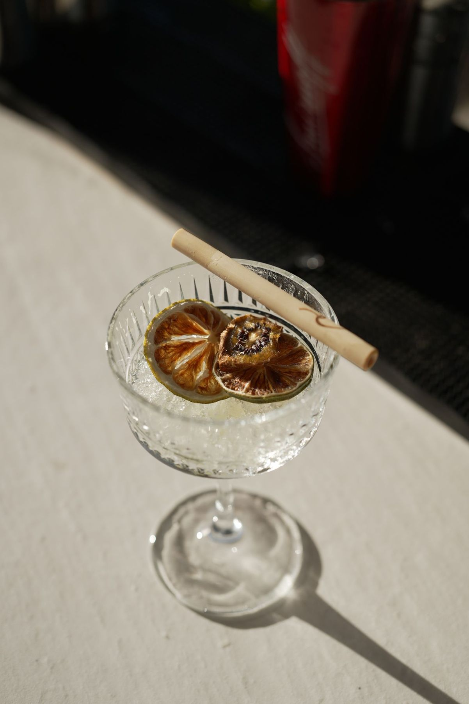
Misafir yetenekler, mum ışığında sofralar.Guest talents, candlelit tables.
Rezervasyon: +90 537 776 82 52Reservations: +90 537 776 82 52
16.10Dört elFour hands
Bir akşam, iki kıyı.One evening, two coasts.
Necmi Ağaç ve Yüksel Demirkıran, Ege ile Akdeniz'in mutfak hafızasını aynı menüde buluşturdu.Necmi Ağaç and Yüksel Demirkıran brought the Aegean and the Mediterranean together on one menu.
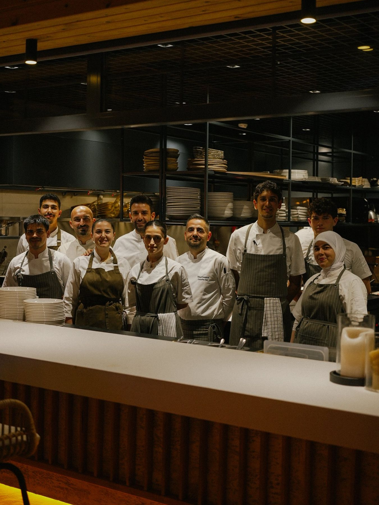
29.10Bar takeoverBar takeover
Federico Penzo · Nelly White
Cumhuriyet'in 103. yılında barda Federico Penzo ve kırmızı dokunuşlar; çatıda Nelly White'ın sesiyle mum ışığında akşam yemeği.For the Republic's 103rd anniversary, Federico Penzo behind the bar with a touch of red; dinner by candlelight on the rooftop with the voice of Nelly White.
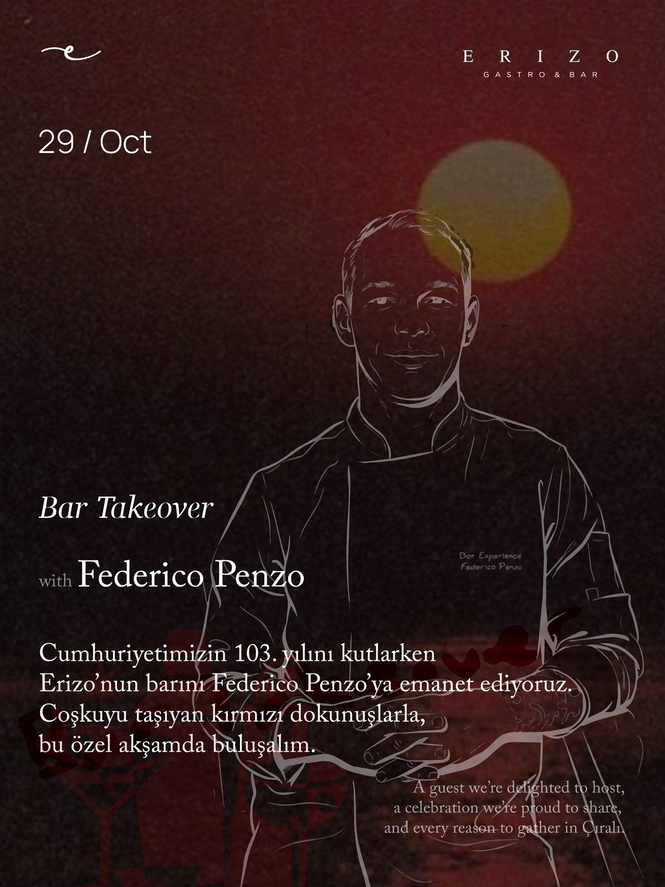
30.10Misafir şefGuest chef
Anatolian Fusion · Altuğ Tezer
Anadolu'nun mutfak mirasına kendi yorumuyla bakan bir akşam: tanıdık lezzetler, beklenmedik keşifler, sofrada uzayan sohbetler.An evening exploring Anatolia's culinary heritage through his own perspective: familiar flavours, unexpected discoveries, conversations that linger.
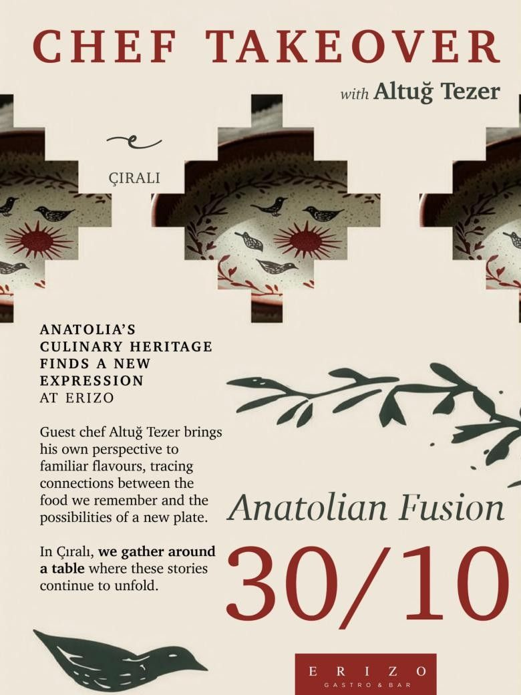
31.10Halloween
Kimera'nın bu gece misafirleri var.The Chimera has company tonight.
Kostümle gelin: akşam yemeği, müzik ve Çıralı'da Halloween.Come in costume for dinner, music and Halloween in Çıralı.
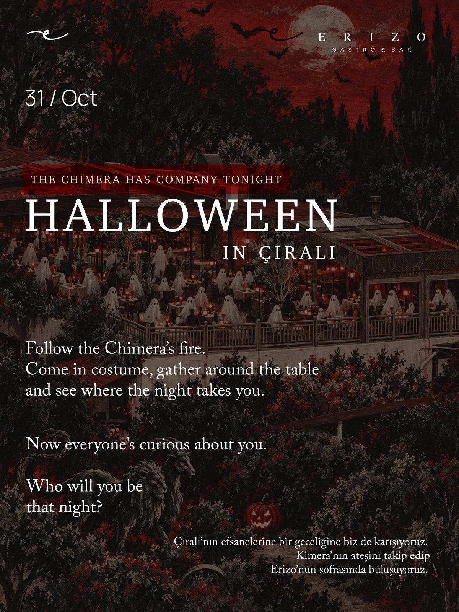
Bir masa ayırtın.Reserve a table.
Kimera'da kalmıyor olsanız da Erizo'ya bekleriz. Tarihi, saati ve kişi sayısını seçin; mesajı biz yazalım.You don't need to be staying at Kimera to dine at Erizo. Choose the date, time and party size and we'll write the message.
Ulupınar Mah. Çıralı Sahil Yolu No:492, Kimera Hotel, Kemer, Antalya